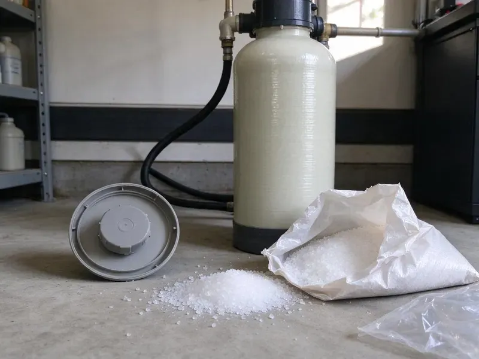

Water Heater Maintenance in Greenville, MS
DFM Plumbing keeps hot water steady in Greenville, MS homes with yearly tune-ups and a relief valve test.
- Tank and Tankless Units
- Licensed, experienced technicians
- Same-Day Tune-Ups
- Certified Plumbers

Book a Water Heater Tune-Up in Greenville, MS
A cold shower is the worst way to find out. Book a tune-up with DFM Plumbing.
Water Heater Maintenance in Greenville, MS
DFM Plumbing services tank and tankless water heaters with the same goal: keep them heating, safe and running as long as possible. Most of what kills a tank is slow, sediment on the bottom, a spent anode rod and a relief valve that has not moved in years, and all three are easy to catch on a yearly visit. Pilot trouble gets checked too.
Some of what we do:
- Anode rod replacement with the correct type for your water
- Relief valve testing and swap-outs
- Anode rod checks and replacement

Additional Plumbing Maintenance Services in Greenville, MS
Our maintenance and specialty plumbing services in Greenville, MS protect your home year-round and extend the life of every system.


Customers
Why Choose DFM Plumbing for Water Heater Maintenance in Greenville, MS?
Maintenance is about performance as much as emergencies. A tank that heats efficiently recovers faster after a shower, holds temperature better and costs less to run, which you notice on the utility bill and on busy mornings. Mornings go smoother.
- Warranty Records, Service records help keep manufacturer warranties valid.
- Sediment Removed, We flush out the buildup that causes rumbling and lukewarm water.
- Relief Valve Tested, A working relief valve prevents dangerous pressure inside the tank.
Citywide Coverage
Across Greenville and nearby towns, DFM Plumbing handles water heater maintenance. Small gas tanks, big dual-heater homes and tankless systems each get an adjusted visit. No two are alike.
Experienced Team
Our plumbers work on every make of water heater. They know how water hardness and temperature swings in this part of the country affect tanks and tankless units, and they adjust the flush schedule and anode choice to match. They know the patterns.
Safety-First Approach
Every visit follows Mississippi plumbing code and industry practice. Discharge piping, shutoffs, venting and pans are all checked to code. Rules exist for reasons.
Trusted Certified Greenville Plumbing Services Professionals
At DFM Plumbing, we take pride in licensed, certified plumbing services throughout Greenville, MS. Credentials matter in this trade. Our plumbers hold recognized industry credentials, and they follow strict safety and quality rules on every repair, installation and maintenance call we run.
Call Us Now PHCC Plumbing Contractor Recognition
PHCC Plumbing Contractor Recognition Better Business Bureau (BBB) Accreditation
Better Business Bureau (BBB) Accreditation Angi Certified Pro
Angi Certified Pro ISO 9001 Quality Management Certification
ISO 9001 Quality Management CertificationWhat a Water Heater Tune-Up Covers in Greenville, MS
Attic, Closet and Garage Units in Greenville
Location changes the risks. Attic heaters need pans and drain lines, and garage gas units often need elevation or protection. Pans get inspected. Access platforms and venting get looked at too.

Water Heater Maintenance Plans in Greenville, MS
A plan takes the remembering off your plate. Members get a yearly or twice-yearly visit on the calendar, a reminder before it is due, priority scheduling if the heater acts up and discounted rates on any repair we find. Hard water homes often go twice a year. Service records stay with us.
Tune-Up Versus Replacement in Greenville, MS
A tune-up costs a fraction of a new heater. Installed tanks often run well over a thousand dollars, and regular flushing and anode replacement help a tank reach the high end of its rated lifespan, while tankless units can last many years with proper descaling. Sometimes replacement makes sense. You see both prices side by side.
Descaling Tankless Units in Greenville
Error codes often mean scale. Scale in the exchanger cuts flow and trips the unit's safety shutoff. A pump kit handles it. Most makers recommend descaling at least yearly with hard water.
Water Heater Leak Checks in Greenville, MS
Small drips become floods. Connections, the relief valve, the drain valve and the seams get checked, along with the pan and floor. Rust stains are a warning. Early repairs protect floors and drywall.
Tankless Descaling in Greenville, MS
Scale is the tankless unit's main enemy. Homes around Greenville on wells or small rural water systems should test their water before choosing a filter. We close the isolation valves, connect a small pump and circulate descaling solution through the heat exchanger for the time the manufacturer recommends, then flush it with clean water. The inlet screen gets cleaned too. Igniter, burner and venting get a safety check.
Anode Rod Checks in Greenville
The anode rod rusts so the tank does not. It is a long metal rod screwed into the top of the tank, and once it has corroded down to bare wire, the water starts eating the steel tank lining instead. We pull it and look. A new anode costs far less than a new tank.

Maintenance for Every Brand in Greenville
Rheem, AO Smith, Bradford White, Noritz, Rinnai and more. Each brand has its own anode type, drain valve style and descaling procedure, and we follow the manufacturer's guidelines so the service holds up if you ever need to file a warranty claim. Model details matter. We bring the right parts.
Water Heater Maintenance Near You in Greenville, MS
Typing water heater maintenance near me in Greenville, MS brings up plenty of names. Ask each one whether they pull and inspect the anode rod and test the relief valve, because a flush alone misses the parts that protect the tank and the house. We do both. Every visit, every tank.
Our techs cover every part of Greenville. Spread-out trucks keep drive times short and arrival windows tight. We call ahead.
DFM Plumbing at a Glance
- Fully licensed plumbing team covering Greenville, MS
- 24/7 emergency service with same-day scheduling
- Clear written estimates, no hidden fees
- 4.8-star rated by 503+ Mississippi customers
Greenville Map
Greenville Information
- Population
- 27,644
- Area codes
- Local
- Service area
- Greenville and towns within a 40 mile drive
- Nearby
- Vicksburg, Clinton, Madison, Ridgeland
Hard water and seasonal temperature swings wear down water heaters faster in Greenville, MS, so a yearly flush pays off. Constant moisture speeds up corrosion on metal pipes and fittings and encourages mold around slow leaks.
Expert Services
Call DFM Plumbing for honest, reliable plumbing from people who know the trade in Greenville, MS.
Our Specialized Plumbing Services in Greenville, MS
At DFM Plumbing, we handle the full list of plumbing services across Greenville, MS. From leak detection to full system installs, our team works fast and charges fair prices on homes and commercial properties alike. Here are the core services we offer:


Our Water Heater Maintenance Steps in Greenville, MS
We follow the same steps on every water heater visit in Greenville, MS.
Book the Visit
Call us at (601) 265-9260 or use the online form. Tell us the model if you know it.
Inspect the Unit
We look over the tank, fittings and vent. Findings are recorded.
Flush and Service
We flush the tank, test valves and check the anode. Burners or elements get checked.
Frequently Asked Questions About Water Heater Maintenance in Greenville
Plan on $100 to $250 for most visits. That usually covers a flush, an anode rod inspection and the safety checks, and the price depends on whether you have a standard tank, a large tank or a tankless unit. Price before we start.
It will. Flushing and anode care slow corrosion and delay replacement. It pays for itself.
Most tank flushes and inspections take 45 to 90 minutes. Tankless descaling usually takes one to two hours.
Partly. Anode, valve and element checks need tools, and errors can void a warranty. Gas work needs a pro.
Running short on hot water is usually first. Popping or rumbling from the tank, rusty or cloudy hot water and a higher energy bill with no change in use are all signs your heater needs a professional look. Sooner is cheaper.
No, routine maintenance does not need a permit. Permits usually come into play for a new installation or a replacement, so the work can be inspected under local building and plumbing code.
Once a year for most homes. In houses with harder water, flushing every six to twelve months keeps sediment from hardening on the bottom of the tank.
Yes, both. We follow manufacturer guidelines on all major tank and tankless brands.
Hear From Customers Who Hired Our Plumbing Experts

Marcus H.
Grease from the fryer line kept clogging the kitchen drain at my diner. DFM Plumbing hydro jetted the line after closing, showed me the buildup on camera, and set us up on a quarterly cleaning so it does not catch us on a Friday again.
Drain Cleaning · Jackson, MS
Karen W.
After our third pinhole leak in copper, we stopped patching. DFM Plumbing gave us a written plan room by room and repiped the house in PEX while we stayed in it. The crew covered our floors every morning and cleaned up every night.
Repiping · Ridgeland, MS
Brian W.
I smelled gas behind the dryer and called right away. The plumber found a corroded flex connector, replaced it, and pressure tested the whole line before turning the gas back on. He let me watch the gauge hold steady for fifteen minutes.
Gas Line Repair · Ridgeland, MS
Laura S.
Our 40 gallon tank started leaking from the bottom after thirteen years. The tech hauled the old one out, set a new unit with a fresh expansion tank, and had hot water running in about four hours. He took the old tank with him too.
Water Heater Replacement · Madison, MSKevin O.
Before buying our house I paid for a sewer camera inspection. DFM Plumbing found a belly in the line that held standing water about forty feet from the cleanout. We used the video to get the sellers to fix it before closing.
Sewer Camera Inspection · Greenville, MSJames P.
Our restaurant had a slow leak at the hand sink that was rotting the cabinet base. DFM Plumbing came in at six in the morning before prep, replaced the trap and both supply lines, and was packed up before my first cook clocked in.
Commercial Plumbing · Ridgeland, MS